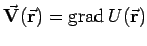
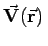
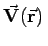

Inhalt Index DeskTop Bronstein

 Vektoranalysis und Feldtheorie Integration in Vektorfeldern Kurvenintegral und Potential im Vektorfeld Konservatives oder Potentialfeld
Vektoranalysis und Feldtheorie Integration in Vektorfeldern Kurvenintegral und Potential im Vektorfeld Konservatives oder Potentialfeld


Wenn die Beziehung  gilt, dann ist  das Potential des Feldes , und umgekehrt ist
das Potential des Feldes , und umgekehrt ist  ein Potentialfeld oder konservatives Feld. In der Physik ist in Übereinstimmung mit (13.107) das negative Vorzeichen zu berücksichtigen.
ein Potentialfeld oder konservatives Feld. In der Physik ist in Übereinstimmung mit (13.107) das negative Vorzeichen zu berücksichtigen.